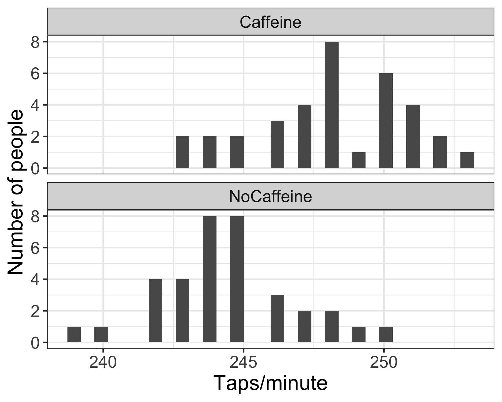

Lesson 14: Power and sample size calculations for means
TB sections 5.4
2024-11-20
Learning Objectives
- Understand the four components in equilibrium in a hypothesis test.
- Define the significance level, critical value, and rejection region.
- Define power and understand its role in a hypothesis test.
- Understand how to calculate power for two independent samples.
- Using R, calculate power and sample size for a single mean t-test and two independent mean t-test.
Where are we?

Before we get into power and sample size
Let’s watch this youtube video to jog our memory (remind us of what we learned):
Learning Objectives
- Understand the four components in equilibrium in a hypothesis test.
- Define the significance level, critical value, and rejection region.
- Define power and understand its role in a hypothesis test.
- Understand how to calculate power for two independent samples.
- Using R, calculate power and sample size for a single mean t-test and two independent mean t-test.
From Lesson 13: Does caffeine increase finger taps/min (on average)?
- Use this example to illustrate how to calculate a confidence interval and perform a hypothesis test for two independent samples
Study Design:1
- 70 college students students were trained to tap their fingers at a rapid rate
- Each then drank 2 cups of coffee (double-blind)
- Control group: decaf
- Caffeine group: ~ 200 mg caffeine
- After 2 hours, students were tested.
- Taps/minute recorded
We started looking at the taps/min for each group
What if the following were the true population distributions? Case 1
- Difference in population means is 5
- Both have a standard deviation of 2
- When we take two samples from these groups, do you think it would be easy to distinguish between the mean taps/min?
- Depends on the number of samples we get: we might need a lot
What if the following were the true population distributions? Case 2
- Difference in population means is 5
- Both have a standard deviation of 1
- When we take two samples from these groups, do you think it would be easy to distinguish between the mean taps/min?
- Seems easier to distinguish here. How did the standard deviation decrease?
What if the following were the true population distributions? Case 3
- Difference in population means is 10
- Both have a standard deviation of 2
- When we take two samples from these groups, do you think it would be easy to distinguish between the mean taps/min?
- Also seems easier to distinguish here
There are a few things at play here
- There are several measurements that affect how easy it is to distinguish between two populations
- “Distinguish between two populations” = correctly reject the null hypothesis that they are the same
What elements are at play?
- Difference in population means
- Number of samples from each population
- The significance level that we use for a cut off
- The power of our test
More familiar with first two, but let’s define #3 and #4 more
Learning Objectives
- Understand the four components in equilibrium in a hypothesis test.
- Define the significance level, critical value, and rejection region.
- Define power and understand its role in a hypothesis test.
- Understand how to calculate power for two independent samples.
- Using R, calculate power and sample size for a single mean t-test and two independent mean t-test.
Significance levels and critical values
- Critical values are the cutoff values that determine whether a test statistic is statistically significant or not
- Determined by the significance level
- If a test statistic is greater in absolute value than the critical value, we reject \(H_0\)
- Critical values are determined by
- the significance level \(\alpha\),
- whether a test is 1- or 2-sided, &
- the probability distribution being used to calculate the p-value (such as normal or t-distribution)
- We have been referring to critical values from the t-distribution as \(t^*\)
- See how we calculate a specific confidence interval in Lesson 10
Poll Everywhere Question 1
Rejection region, significance levels, and critical values
- If the absolute value of the test statistic is greater than the critical value, we reject \(H_0\)
- In this case the test statistic is in the rejection region.
- Otherwise it’s in the non-rejection region.
- What do rejection regions look like for 1-sided tests?
Learning Objectives
- Understand the four components in equilibrium in a hypothesis test.
- Define the significance level, critical value, and rejection region.
- Define power and understand its role in a hypothesis test.
- Understand how to calculate power for two independent samples.
- Using R, calculate power and sample size for a single mean t-test and two independent mean t-test.
Let’s start with some important definitions in words
- Type I error (\(\alpha\)): Probability of rejecting the null hypothesis given that the null is true
- Type II error (\(\beta\)): Probability of failing to reject the null hypothesis given that the null hypothesis is false
- Power (or sensitivity) (\(1 - \beta\)): Probability of rejecting the null hypothesis given that the null is false (correct)
- Specificity (\(1-\alpha\)): Probability of failing to reject the null hypothesis given that the null is true (correct)
What does that look like with our two populations?
- \(\alpha\) = probability of making a Type I error
- This is the significance level (usually 0.05)
- Set before study starts
- \(\beta\) = probability of making a Type II error
- Ideally we want
- small Type I & II errors and
- big power
Power (or sensitivity) (\(1 - \beta\)): Probability of rejecting the null hypothesis given that the null is false (correct)
- Power is the correct region that is usually in line with our study design: studies are often seeing if there is a distinction between two populations
Power
- Power (or sensitivity) (\(1 - \beta\)): Probability of rejecting the null hypothesis given that the null is false (correct)
- Power is also called the
- true positive rate,
- probability of detection, or
- the sensitivity of a test
- Typically, we aim for 80% or 90% power

Let’s demonstrate the relationship between error and power
From the applet at https://rpsychologist.com/d3/NHST/
Let’s look at the following scenarios:
Solve for power: decreasing type 1 error (\(\alpha\))
Solve for power: increasing type 1 error (\(\alpha\))
Solve for power: decrease sample size
Solve for power: increase sample size
Solve for power: increase difference of means
Solve for power: decrease difference of means
- Takeaway: cannot minimize both type 1 and 2 error
- Takeaway: increasing sample size increases power
- Takeaway: increasing difference in means increases power
If you want to keep revisiting these concepts!
From the applet at https://rpsychologist.com/d3/NHST/


- Cohen’s d is just a stanardized value to represent the difference in means: \[d = \dfrac{\overline{x}_1 - \overline{x}_2}{s}\]
Learning Objectives
- Understand the four components in equilibrium in a hypothesis test.
- Define the significance level, critical value, and rejection region.
- Define power and understand its role in a hypothesis test.
- Understand how to calculate power for two independent samples.
- Using R, calculate power and sample size for a single mean t-test and two independent mean t-test.
Calculating power or sample size
- Typically, before we set up a research study, we try to find the needed sample size to achieve 80% or 90% power
- If we have already have data, then we typically calculate the power based on the sample we have
Example calculating power (1/3)
Let’s say we have:
- a null population with a normal distribution, centered at 0 with a standard deviation of 1 (\(X_0 \sim Norm(0,1)\))
- an alternative population, centered at 3 with a standard deviation of 1 (\(X_A \sim Norm(3,1)\))
Find the power of a 2-sided test if the actual mean is \(3\) and our significance level is 0.05.
Example calculating power (2/3)
Let’s say we have:
- a null population with a normal distribution, centered at 0 with a standard error of 1 (\(X_0 \sim Norm(0,1)\))
- an alternative population, centered at 3 with a standard error of 1 (\(X_A \sim Norm(3,1)\))
Find the power of a 2-sided test if the actual mean is \(3\) and our significance level is 0.05.
- Power = \(P\) (Reject \(H_0\) when alternative pop is true)
- Correctly reject null
- When \(\alpha\) = 0.05, we reject \(H_0\) when the test statistic z is at least 1.96 (critical value is 1.96 under the null distribution)
- Then we need to calculate the probability that we are in the rejection regions given we are actually in the alternative population
- Thus under the alternative population, we need to calculate \(P(X_A \le -1.96) + P(X_A \ge 1.96)\)
Example calculating power (3/3)
Thus under the alternative population, we need to calculate \(P(X_A \le -1.96) + P(X_A \ge 1.96)\)
Under the alternative population we have \(X_A \sim Norm(3,1)\)
# left tail + right tail:
pnorm(-1.96, mean=3, sd=1,
lower.tail=TRUE) +
pnorm(1.96, mean=3, sd=1,
lower.tail=FALSE)[1] 0.8508304Answer: The power is 85%
- The left tail probability
pnorm(-1.96, mean=3, sd=1, lower.tail=TRUE)is essentially 0 in this case. - Note that this power calculation specified the value of the SE instead of the standard deviation and sample size \(n\) individually.
Learning Objectives
- Understand the four components in equilibrium in a hypothesis test.
- Define the significance level, critical value, and rejection region.
- Define power and understand its role in a hypothesis test.
- Understand how to calculate power for two independent samples.
- Using R, calculate power and sample size for a single mean t-test and two independent mean t-test.
R package pwr for power analyses1
- Use
pwr.t.testfor both one- and two-sample t-tests - Specify all parameters except for the one being solved for
Leave out:
n: returns sample sized: returns Cohen’s d/effect size (next slide)sig.level: get significance level (not typical)power: returns power
What is Cohen’s \(d\)?
dis Cohen’s d effect size- Just a standardized way to measure the distance between the null mean and the alternative mean
- Examples of values: small = 0.2, medium = 0.5, large = 0.8
One-sample test (or paired t-test):
\[d = \frac{\mu-\mu_0}{s}\]
Two-sample test (independent):
\[d = \frac{\bar{x}_1 - \bar{x}_2}{s_{pooled}}\]
- \(\overline{x}_1 - \overline{x}_2\) is the difference in means between the two groups that one would want to be able to detect as being significant,
- \(s_{pooled}\) is the pooled SD between the two groups - often assume have same sd in each group
Power calculation for testing one mean
Conversely, we can calculate how much power we had in our body temperature one-sample test, given the sample size of 130.
- Calculate power,
- given \(\alpha\), \(n\), “true” alternative mean \(\mu\), and null \(\mu_0\),
- assuming the test statistic is normal (instead of t-distribution)
\[1-\beta= P\left(Z \leq z-z_{1-\alpha/2}\right)+P\left(Z \leq -z-z_{1-\alpha/2}\right) \quad ,\quad \text{where } z=\frac{\mu-\mu_0}{s/\sqrt{n}}\]
\(\Phi\) is the probability for a standard normal distribution
[1] -5.466595[1] 0.9997731If the population mean is 98.2 instead of 98.6, we have a 99.98% chance of correctly rejecting \(H_0\) when the sample size is 130.
Sample size calculation for testing one mean
- Recall in our body temperature example that \(\mu_0=98.6\) °F and \(\overline{x}= 98.25\) °F.
- The p-value from the hypothesis test was highly significant (very small).
- What would the sample size \(n\) need to be for 80% power?
- Calculate \(n\)
- given \(\alpha\), power ( \(1-\beta\) ), “true” alternative mean \(\mu\), and null \(\mu_0\)
- Calculate
d: \(d = \frac{\mu-\mu_0}{s}\)
pwr: sample size for one mean test
Specify all parameters except for the sample size:
pwr: power for one mean test
Specify all parameters except for the power:
pwr: Two-sample t-test: sample size
Example: Let’s revisit our caffeine taps study. Investigators want to know what sample size they would need to detect a 2 point difference between the two groups. Assume the SD in both group samples is 2.6.
Specify all parameters except for the sample size:
::::::
pwr: Two-sample t-test: power
Example: Let’s revisit our caffeine taps study. Investigators want to know what power they have to detect a 2 point difference between the two groups. The two groups are both size 35 (like in our previous example). Assume the SD in both group samples is 2.6.
Specify all parameters except for the power:

Resources for power and sample size calculations
More software for power and sample size calculations: PASS
- PASS is a very powerful (& expensive) software that does power and sample size calculations for many advanced statistical modeling techniques.
- Even if you don’t have access to PASS, their documentation is very good and free online.
- Documentation includes formulas and references.
- PASS documentation for powering means
- One mean, paired means, two independent means
- One-sample t-test documentation: https://www.ncss.com/wp-content/themes/ncss/pdf/Procedures/PASS/One-Sample_T-Tests.pdf
OCTRI-BERD power & sample size presentations
- Power and Sample Size 101
- Presented by Meike Niederhausen; April 13, 2023
- Slides: http://bit.ly/PSS101-BERD-April2023
- Recording
- Power and Sample Size for Clinical Trials: An Introduction
- Presented by Yiyi Chen; Feb 18, 2021
- Slides: http://bit.ly/PSS-ClinicalTrials
- Recording
- Planning a Study with Power and Sample Size Considerations in Mind
- Power and Sample Size Simulations in R
Lesson 14 Slides